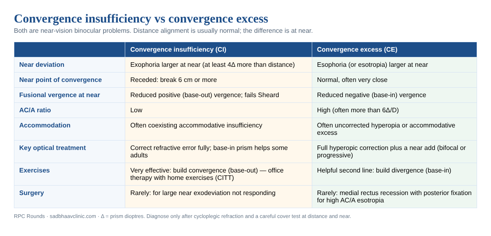
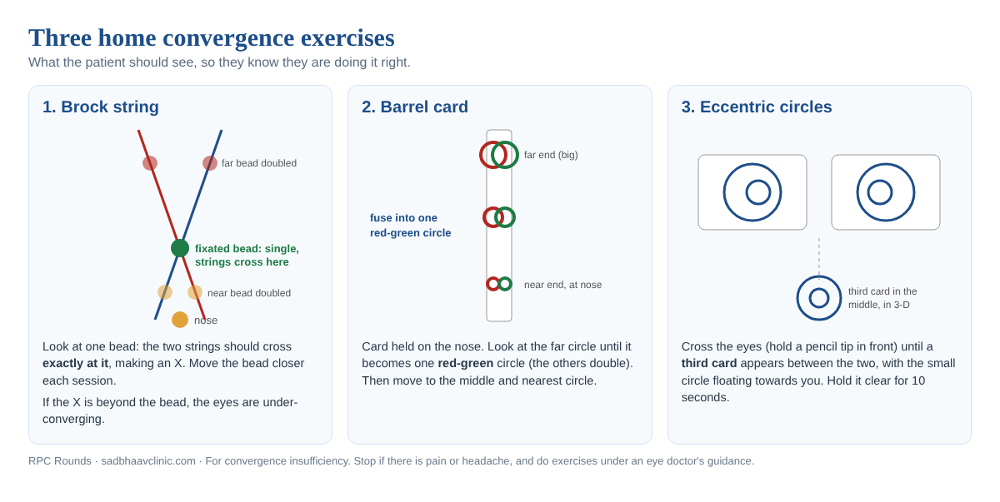

Convergence Insufficiency and Convergence Excess: Diagnosis, Treatment and Exercises
Last updated: November 2026
Key points in 60 seconds
Convergence insufficiency: exophoria larger at near (4Δ or more), receded NPC (6 cm or more) or low base-out vergence, with symptoms.
Convergence excess: esodeviation larger at near, high AC/A, normal NPC, low base-in vergence.
Always do a cycloplegic refraction and a cover test at distance and near with an accommodative target.
CI: office vergence therapy with home exercises works best (CITT, about 73%); pencil push-ups alone equal placebo.
CE: full hyperopic correction plus a near add; exercises for divergence are second line.
Convergence insufficiency and convergence excess are the two commonest causes of eye strain with reading in children and young adults, yet they are easy to miss because the eyes look straight. This guide covers how to diagnose each one in the clinic, what the CITT trials showed, how to prescribe glasses, adds and prisms, and exactly how to teach the exercises so patients do them correctly at home.

The basics: vergence, phorias and the AC/A ratio
When we look from distance to near, three things happen together (the near triad): the eyes converge, the lenses accommodate and the pupils constrict. Total convergence has four parts (Maddox): tonic (baseline tone), accommodative (driven by focusing effort), fusional (driven by retinal disparity) and proximal (awareness of nearness). Non-strabismic binocular vision problems happen when the deviation at near is too large for fusional vergence to hold comfortably.
The Duane-White classification sorts these problems by comparing the deviation at distance and near:
Type
Distance
Near
AC/A
Convergence insufficiency
Ortho or small exo
Larger exo
Low
Convergence excess
Ortho or small eso
Larger eso
High
Divergence insufficiency
Larger eso
Ortho or small eso
Low
Divergence excess
Larger exo
Ortho or small exo
High
Basic eso or exo
Same
Same
Normal
Measuring the AC/A ratio
The AC/A ratio is the amount of accommodative convergence (in prism dioptres) produced by each dioptre of accommodation. The normal range is about 3 to 5Δ per dioptre.
Calculated (heterophoria) method: AC/A = IPD (cm) + (near deviation − distance deviation) ÷ near accommodative demand (D). Use + for eso and − for exo. Example: IPD 6 cm, distance ortho, near 12Δ exo at 40 cm (2.5 D): 6 + (−12 − 0) ÷ 2.5 = 1.2Δ/D, which is low. This method includes proximal convergence and reads slightly higher.
Gradient method: measure the near deviation with and without a −1.00 D (or +1.00 D) lens. AC/A = change in deviation ÷ lens power. Example: near eso 20Δ, falling to 8Δ with +3.00 D: 12 ÷ 3 = 4Δ/D. This excludes proximal convergence, so it is lower and more repeatable.
Sheard criterion: the opposing fusional reserve (to the blur point, or break if no blur) should be at least twice the phoria. For 10Δ of exophoria at near you want at least 20Δ of base-out (positive) vergence. Prism needed = (2 × phoria − reserve) ÷ 3. Percival criterion (often better for esophoria): the lesser fusional limit should be at least half the greater.
Convergence insufficiency (CI)
Convergence insufficiency is the commonest non-strabismic binocular vision problem, found in roughly 2 to 8% of school children and many young adults with heavy near work. It is also common after concussion and traumatic brain injury, in Parkinson disease, and in older people beginning to use reading glasses. The eyes cannot converge enough, or hold convergence long enough, for comfortable reading.
Symptoms
Symptoms appear with near work and worsen as the day goes on: eye strain and headache, blurred print, words that seem to move or float, losing one's place, double vision at near, sleepiness or poor concentration when reading, and avoiding reading altogether. In children it is often mistaken for a learning or attention problem. A validated questionnaire, the Convergence Insufficiency Symptom Survey (CISS), helps: a score of 16 or more in children (21 or more in adults) is symptomatic, and it is the best way to track response.
CI: how to diagnose it
Do these tests in this order, after correcting any refractive error. The CITT definition of symptomatic CI needs: exophoria at near at least 4Δ greater than at distance, plus either a receded near point of convergence (break 6 cm or more) or reduced positive fusional vergence at near (failing Sheard, or base-out blur or break of 15Δ or less), plus symptoms.
Refraction: cycloplegic in children. Uncorrected myopia (no accommodative drive at near) and anisometropia mimic CI.
Cover test at 6 m and 33 to 40 cm with a small accommodative target (letters, not a light), measured with the alternate prism cover test. Typical CI: ortho or small exophoria at distance, larger exophoria at near.
Near point of convergence (NPC): bring a small accommodative target (a single letter on a stick, or the RAF rule) slowly towards the nose along the midline. Note the break (target doubles or one eye drifts out) and the recovery as it is moved back. Normal break is under 6 cm (often 3 to 5 cm). Repeat 4 to 5 times: an NPC that recedes with repetition shows poor stamina. Add a red-glass or penlight NPC; a receded result with red glass is more sensitive.
Fusional vergence at near with a prism bar: base-out (positive) first, increasing slowly, noting blur, break and recovery; then base-in. Normal near base-out is roughly 17/21/11Δ (blur/break/recovery). In CI the base-out blur or break is low, or fails Sheard. Jump vergence (alternating 12Δ base-in and 3Δ base-out flippers) tests facility.
Accommodation: amplitude by push-up (Hofstetter minimum = 15 − 0.25 × age), accommodative facility with ±2.00 D flippers, and lag with MEM retinoscopy. Accommodative insufficiency often coexists and must be treated too.
AC/A ratio: usually low.
Stereopsis and motility: stereoacuity, versions and ductions to exclude a palsy or restriction; check pupils.
Pseudo-convergence insufficiency: poor accommodation reduces accommodative convergence, so the NPC recedes. Repeat the NPC through +2.00 D lenses: if convergence normalises, treat the accommodative insufficiency first (reading glasses or accommodative exercises), not convergence.
CI: management
1. Correct refractive error
Prescribe the full myopic correction and correct significant astigmatism and anisometropia. In hyperopes with CI, give the least plus needed for comfort, because extra plus reduces accommodative convergence and can increase the near exophoria.
2. Vergence and accommodative therapy (the evidence)
The Convergence Insufficiency Treatment Trial (CITT, 2008) randomised 221 children aged 9 to 17 with symptomatic CI to four 12-week treatments. Success or improvement in symptoms and signs was: office-based vergence/accommodative therapy with home reinforcement about 73%, home computer vergence therapy plus pencil push-ups about 43%, home pencil push-ups alone about 33%, and placebo office therapy about 35%. So pencil push-ups alone did no better than placebo, and a supervised programme worked best. Improvements were largely maintained a year later.
The CITT-ART (2019) trial in children aged 9 to 14 confirmed that office therapy improves the clinical measures of CI, but it did not improve standardised reading scores more than placebo therapy. Tell parents honestly: therapy treats the eye-strain symptoms of near work; it is not a reading or learning treatment by itself.
A typical office-based programme is one 60-minute session a week for 12 to 16 weeks, with 15 minutes of home exercises five days a week, moving through stages: (1) awareness of diplopia and gross convergence, (2) building fusional vergence range and accommodative facility, (3) jump vergence and speed, and (4) integrating vergence with versions and accommodation. Treatment stops when symptoms resolve and the NPC and base-out vergence are normal, followed by maintenance once a week for a few months.
3. Prisms
Base-in reading prisms were no better than placebo glasses for children with CI (CITT group, 2005). They can help presbyopic adults and patients who cannot do therapy; prescribe by the Sheard formula, usually 2 to 4Δ total, split between the eyes.
4. Surgery
Rarely needed: for a large near exodeviation or intermittent exotropia of the convergence insufficiency type that persists after good therapy. Options include bilateral medial rectus resection or plication, or slanted lateral rectus recession. Warn about temporary distance esotropia and diplopia.
The exercises, step by step
Teach each exercise in the clinic and watch the patient do it once; most home failures come from doing the exercise without knowing what they should see. Exercises are for convergence insufficiency confirmed by an eye doctor, not for reducing glasses power. Each one should feel like effort, not pain. Stop if it causes headache, and make sure glasses are worn during the exercises.

A. Pencil push-ups (with physiological diplopia)
Hold a pencil with a small letter on it at arm's length, level with the nose. Place a distant object (a door frame) behind it.
Look at the letter: it is single and clear, and the distant object should look doubled behind it (physiological diplopia). This proves both eyes are working.
Move the pencil slowly towards the nose, keeping the letter single and clear, about 5 to 10 cm per second.
The moment it doubles, stop, and try to make it single again by "pulling" the eyes in. If it will not, move it back until it is single and try again.
Aim to bring it to 2 to 3 cm from the nose while it stays single. Do 20 repetitions, about 5 minutes, three times a day.
Alone, pencil push-ups had no more effect than placebo in CITT, so use them as part of a programme, not the whole treatment.
B. Brock string
A string of about 1 metre with three coloured beads: tie one end to a door handle at eye level and hold the other end to the tip of the nose. Place the beads at about 40 cm, 80 cm and 1 m.
Look at the farthest bead. You should see two strings forming a V that meet at that bead, and the other beads doubled.
Look at the middle bead: the strings should cross exactly at it, forming an X, with the near bead doubled in front and the far bead doubled behind.
Now look at the near bead and make the X cross there. If the strings cross behind the bead, the eyes are under-converging: try to pull the cross to the bead.
Move the near bead closer each day, aiming for 5 cm from the nose. Do 2 to 3 minutes, switching between beads (jump convergence).
If one string disappears, that eye is being suppressed: blink, tap the string, or move the bead back until both strings are seen.
C. Barrel card
A card about 20 cm long with three pairs of red and green circles, small at one end and large at the other. Hold the small end against the tip of the nose, card pointing straight out, tilted slightly down.
Look at the largest (far) pair: they merge into one red-green barrel-shaped circle, while the nearer pairs look doubled.
Hold it single for 5 seconds, then move to the middle and then the nearest pair, and back out.
Do 10 cycles, twice a day. When easy, hold each for longer.
D. Eccentric circles or "lifesaver" cards (free-space convergence)
Two cards printed side by side with large circles and small circles off-centre. Hold the cards at arm's length.
Hold a pencil tip between the card and the eyes and look at the pencil: behind it, three cards appear. Make the middle one clear.
When fused, the middle card shows depth (the small circle floats towards you), and the letters on it should be clear. This is crossed (chiastopic) fusion and builds positive vergence.
Hold for 10 seconds, look away, refuse. Separate the cards slightly as it gets easier to increase the demand.
E. Jump vergence and flippers
Alternate fixation between a near target at 10 to 15 cm and a far one at 3 to 6 m, keeping each single (20 cycles). In the clinic, prism flippers (base-out and base-in) and vergence software (computer orthoptics) build speed and range; these are part of the office programme.
F. Accommodative exercises (if accommodation is weak)
Hart chart near-far rock (read a near chart and a distant chart alternately) and ±2.00 D lens flippers with small print, for 5 minutes a day, until the patient can clear 12 or more cycles per minute.
Home programme to hand to a patient with CI
Daily routine, 15 minutes, 5 days a week, for 12 weeks
Wear your glasses during the exercises.
Minutes 1 to 5: Brock string, near and middle beads, bringing the near bead closer each week.
Minutes 6 to 10: barrel card, 10 cycles, or pencil push-ups, 20 repetitions.
Minutes 11 to 15: eccentric circles, holding the third card for 10 seconds each time.
At school or work: the 20-20-20 rule, good light, and reading at a comfortable distance (about elbow-to-knuckle length).
Stop and tell your doctor if you get headache, pain or constant double vision. Come back every 2 to 4 weeks so the exercises can be stepped up.
Patients and parents can read our simpler eye exercises guide, which explains which exercises help and which do not.
Convergence excess (CE)
Convergence excess is an esodeviation that is larger at near than at distance, usually because of a high AC/A ratio: every dioptre of accommodation drives too much convergence. It may be an esophoria with symptoms, or a manifest esotropia at near only (the high AC/A or non-refractive accommodative esotropia of childhood, often presenting at 2 to 3 years).
Symptoms and signs
Eye strain, headache and blur with reading, intermittent double vision at near, and avoiding near work. In young children, parents notice the eye turning in when looking at books or toys. Typical findings: ortho or small esophoria at distance with a larger esodeviation at near (an esotropia difference of 10Δ or more defines high AC/A esotropia), normal or very close NPC, reduced base-in (negative) fusional vergence at near, high calculated and gradient AC/A, and often a low lag or lead on MEM retinoscopy. Many patients have uncorrected hyperopia.
How to diagnose it
Cycloplegic refraction (cyclopentolate, or atropine in young esotropic children) to uncover latent hyperopia.
Cover test at distance and near through the full correction, with an accommodative target.
Measure the near deviation again through +3.00 D lenses: if the near eso falls to within about 10Δ of the distance deviation, the high AC/A is confirmed and a near add will work.
Fusional vergence at near (base-in limits reduced), NPC (normal), accommodative tests (MEM, negative and positive relative accommodation).
Motility and pupils to exclude a sixth nerve palsy (an incomitant eso larger in the direction of the weak muscle) and spasm of the near reflex.
CE: management
Full cycloplegic hyperopic correction worn constantly. This alone corrects many children.
Near add for the residual near eso: bifocals (in children, an executive or flat-top bifocal with the segment line bisecting the pupil) or progressive lenses in older children and adults. Start with the lowest add that makes the near deviation an esophoria of 10Δ or less, or binocularly controlled (often +2.50 to +3.00 D in children). In symptomatic esophoria the add can be found from the AC/A: add needed = near eso to be removed ÷ AC/A, then refined with MEM.
Weaning: reduce the add in steps (for example by 0.75 to 1.00 D each year) as fusional control improves; many children no longer need it by 8 to 10 years.
Base-out prism at near for a small residual esophoria in adults.
Vision therapy for negative fusional vergence: Brock string with divergence (fixating farther beads), base-in prism flippers, and uncrossed (orthopic) fusion with eccentric circles or vectograms. It is a useful add-on for symptomatic esophoria but less effective than in CI, and it never replaces the glasses.
Surgery when the near esotropia stays manifest despite glasses and add: bilateral medial rectus recession, with posterior fixation sutures (Faden) or augmented recession based on the near angle.
Miotics (echothiophate) reduce accommodative effort but are rarely used now because of cysts and availability.
Look-alikes and red flags
Condition
Clue
Accommodative insufficiency
Low amplitude for age, high MEM lag, NPC normalises through +2.00 D
Sudden exotropia and diplopia at near with normal adduction on versions: midbrain lesion (Parinaud), trauma, Parkinson, so image
Spasm of the near reflex
Intermittent eso with miosis and pseudomyopia; abduction recovers with one eye covered; often functional
Divergence insufficiency
Eso larger at distance; in older adults often sagging eye syndrome; exclude sixth nerve palsy and raised intracranial pressure
Sixth nerve palsy
Incomitant eso, worse on side gaze, abduction limited
Myasthenia, thyroid eye disease, INO
Variable or incomitant deviations, other signs
Refer or image when: onset is sudden in an adult, diplopia is constant, there are other neurological symptoms, the pupils are abnormal, the deviation is incomitant, or symptoms follow a head injury and do not settle.
Where residents slip
Measuring the near deviation with a light instead of an accommodative target, which underestimates both CI and CE.
Calling every receded NPC convergence insufficiency without checking accommodation: pseudo-CI improves with plus lenses.
Prescribing pencil push-ups alone: in CITT they were no better than placebo. A supervised programme works best.
Promising parents that vision therapy will improve reading scores: CITT-ART did not show this.
Giving base-in prism to children with CI: no better than placebo. It helps some presbyopic adults.
Treating convergence excess with exercises instead of full hyperopic correction and a near add.
Missing a neurological cause: sudden convergence paralysis or divergence insufficiency in an adult needs imaging.
Convergence Insufficiency Treatment Trial Study Group. Randomized clinical trial of treatments for symptomatic convergence insufficiency in children. Arch Ophthalmol 2008;126:1336-49.
CITT-ART Investigator Group. Effect of vergence/accommodative therapy on reading in children with convergence insufficiency: a randomized clinical trial. Optom Vis Sci 2019;96:836-49.
Scheiman M, et al. A randomized clinical trial of the effectiveness of base-in prism reading glasses versus placebo reading glasses for symptomatic convergence insufficiency in children. Optom Vis Sci 2005;82:583-95.
Scheiman M, Wick B. Clinical Management of Binocular Vision: Heterophoric, Accommodative, and Eye Movement Disorders. 5th ed. Wolters Kluwer; 2019.
American Academy of Ophthalmology. Basic and Clinical Science Course, Section 6: Pediatric Ophthalmology and Strabismus. 2025-2026.